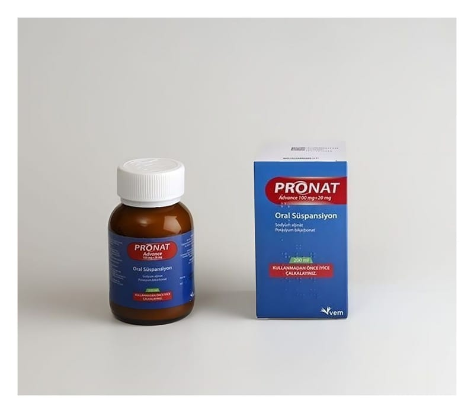

Pronat Advance 100 mg+20 mg Oral Süspansiyon

Ne için kullanılır
KT · Bölüm 1PRONAT ADVANCE, açık krem renkli, viskoz süspansiyondur. PRONAT ADVANCE; karton kutu içerisinde 200 ml oral süspansiyon içeren, 200 ml kapasiteli, amber renkli, Tip III cam şişede 5 ml’lik ölçü kaşığı ile birlikte temin edilir. PRONAT ADVANCE, reflü (mide ve yemek borusu iltihabı) baskılayıcılar diye adlandırılan ilaçlar grubuna dahildir.
PRONAT ADVANCE, reflü özofajite (yemek borusu iltihabı) bağlı belirtilere sahip hastalarda veya gebelik sırasında ya da yemeği takiben oluşan mide yanması, mideden ağza asit gelmesi ve hazımsızlık (reflüye bağlı) gibi gastroözofageal reflüye (mide ve yemek borusu iltihabı) bağlı belirtilerin tedavisinde kullanılır.